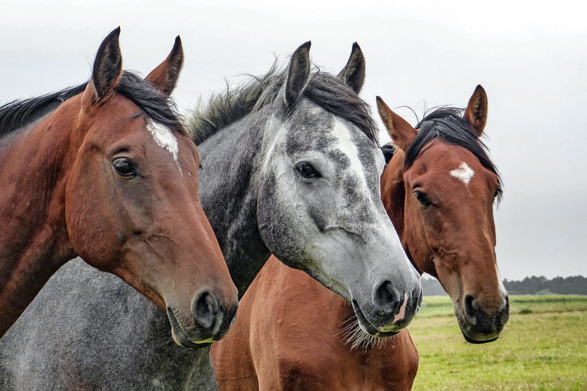
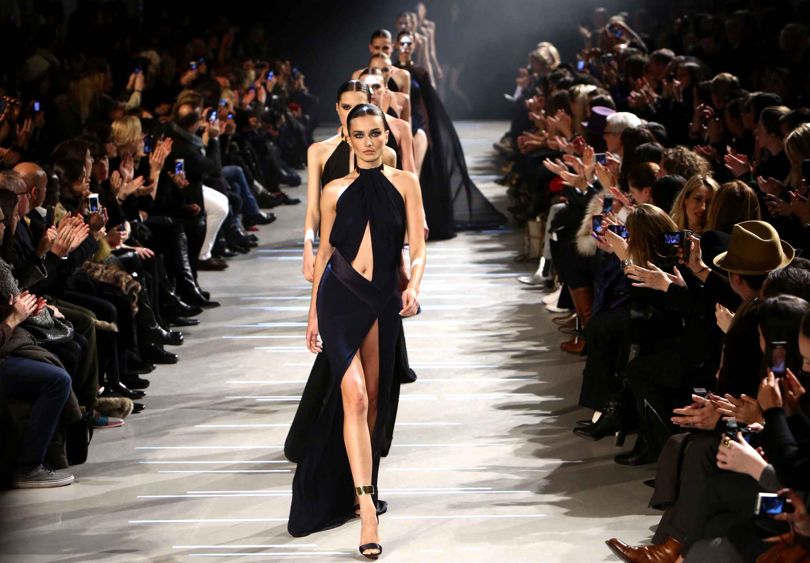

Mes passions
| Accueil | Productions scolaires | Mes passions | Mes vidéos | Mon site de rêve |
|---|

Ma passion est l'équitation. J'aime ce sport parce qu'il me permet de me dépasser, de travailler en équipe et de partager des moments forts avec mes amis. Je pratique l'équitation depuis plusieurs années.Ce sport consiste a travailler le cheval avec précision. C'est un sport très physique qui demande beaucoup de patience et de d'énergie. Depuis petite je suis passionner par les chevaux. Je pratique ce sport pendant 9ans.
Ma passion est la cuisine. J'aime beaucoup cuisiner je trouve que c'est un bon passe temps que ce soit en famille ou avec les amis.Je trouve interessant le fait de découvrir de nouvelles recettes et aussi d'en creer a sa manière.

Ma passion est la mode. Ce que je trouve interéssant dans la mode c'est la diversité des tenues et des mannequins au passage. Dans la vie de tout les jours je m'interesse aux vétements, à la façon de m'habiller. Je trouve que cela défini la personne.